Thế giới bút máy
Một thế giới bắt đầu từ một nét mực...
Phía sau một cây bút máy là cả lịch sử, kỹ thuật, nghệ thuật và những câu chuyện con người. Kho kiến thức dành cho cả người mới bắt đầu lẫn nhà sưu tầm.
Nhập môn bút máy
Bút máy là cây bút tự mang mực bên trong và dẫn mực xuống ngòi nhờ lực mao dẫn. Chỉ cần đặt ngòi lên giấy, không phải ấn mạnh, nét mực tự chảy.
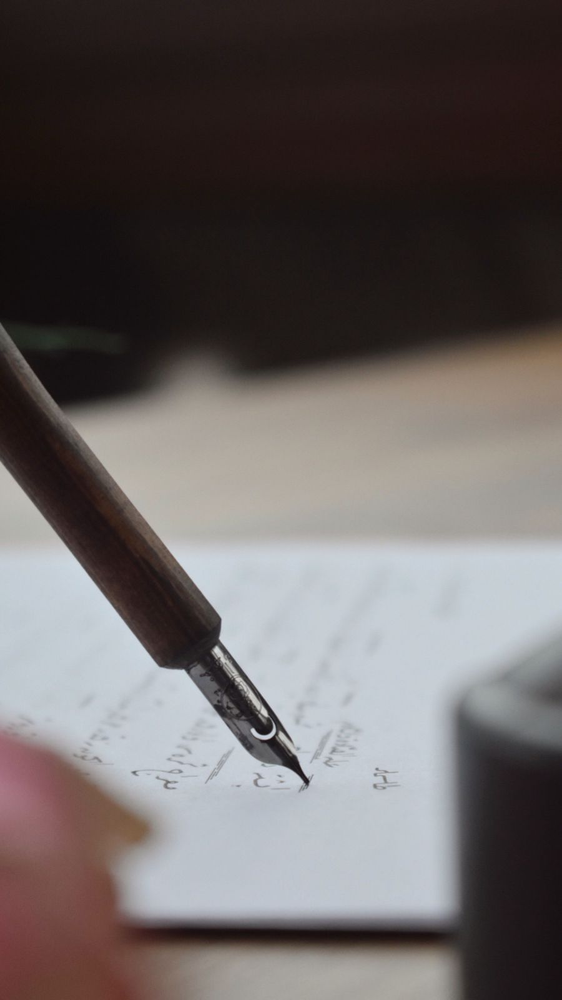
Bút máy khác gì bút bi?
Bút bi dùng viên bi lăn và mực dầu đặc, cần lực ấn. Bút máy dùng mực gốc nước loãng, chảy qua rãnh dẫn mực và khe ngòi xuống giấy. Vì thế tay viết nhẹ hơn, nét chữ có thể thanh đậm, và một cây bút tốt có thể dùng hàng chục năm.
Vì sao người ta vẫn chọn bút máy hôm nay?
- Viết nhẹ tay, ít mỏi khi viết lâu.
- Bền và bơm lại được, ít rác nhựa hơn bút dùng một lần.
- Hàng trăm màu mực để chọn, có thể tự pha.
- Mỗi cây bút, mỗi ngòi cho một nét riêng; nét chữ trở thành dấu ấn cá nhân.
- Gắn với ký ức: với nhiều thế hệ người Việt, cây bút máy là đồ dùng học trò quen thuộc trên lớp.
Chọn cây bút đầu tiên
- Chọn ngòi thép cỡ F (nhỏ) hoặc M (trung bình); ngòi vàng chưa cần thiết khi mới bắt đầu.
- Ưu tiên bút dùng ống mực (cartridge) kèm bộ bơm mực (converter) để thử cả mực ống lẫn mực lọ.
- Dùng mực gốc thuốc nhuộm (dye-based) thông dụng, dễ rửa.
- Viết trên giấy định lượng từ 80 gsm trở lên để hạn chế nhòe và thấm.
- Cầm bút nhẹ, nghiêng khoảng 40 đến 55 độ, mặt ngòi hướng lên, không ấn mạnh.
Thuật ngữ nhanh
Ngòi (nib), rãnh dẫn mực (feed), thân bút (barrel), nắp (cap), ống mực (cartridge), bộ bơm (converter), cỡ ngòi EF, F, M, B.
Lịch sử bút máy
Từ cây bút lông ngỗng phải chấm mực liên tục đến cây bút tự chứa mực, hành trình kéo dài gần 300 năm, qua tay các nhà phát minh Đức, Anh, Romania, Mỹ, Nhật và cả những xưởng bút Việt Nam.
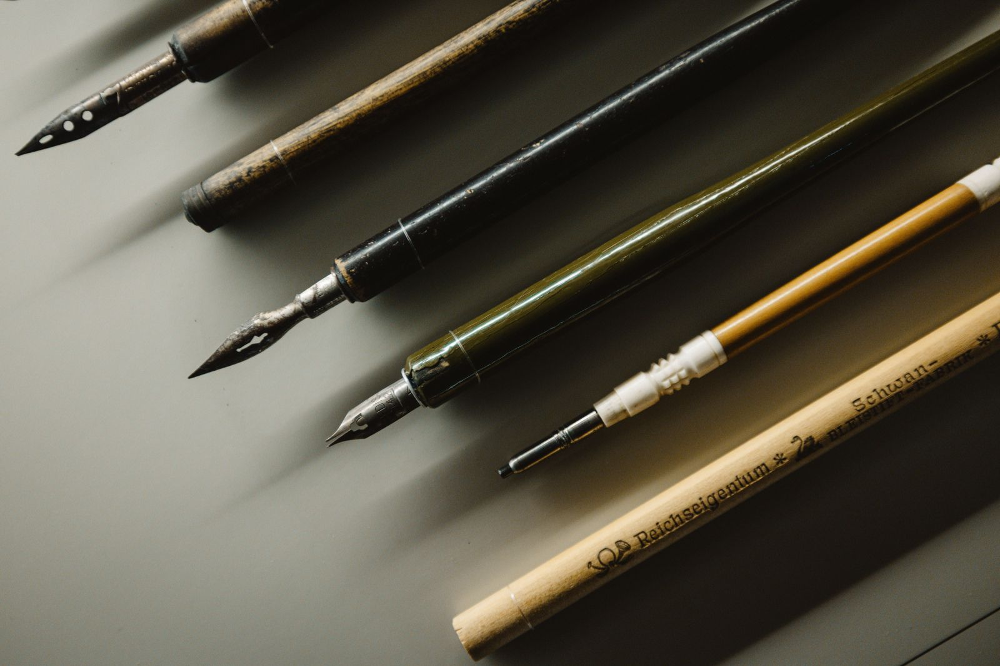
Những mốc chính trên thế giới
| Năm | Sự kiện |
|---|---|
| 1636 | Daniel Schwenter (Đức) mô tả ý tưởng bút chứa mực ghép từ hai ống lông. |
| 1809 | Frederick Fölsch nhận bằng sáng chế bút máy đầu tiên ở Anh. |
| 1819 | Bút "Penographic" của John Scheffer là mẫu đầu tiên bán được trên thị trường. |
| 25.05.1827 | Petrache Poenaru (Romania) nhận bằng sáng chế Pháp cho cây bút có thân làm từ ống lông thiên nga. |
| 1832 | John Jacob Parker (Anh) đăng ký bút tự nạp mực bằng piston vặn ren. |
| 1884 | Lewis E. Waterman (Mỹ) được cấp bằng cho rãnh dẫn mực nhiều kênh, giúp mực chảy đều, nền tảng của bút máy hiện đại. |
| 1912 | Walter A. Sheaffer tung ra bút bơm bằng cần gạt (lever filler), mở đầu thời bút tự nạp mực. |
| 1925 | Namiki (Pilot) đưa nghệ thuật sơn mài maki-e Nhật Bản lên thân bút. |
| 1929 | Pelikan (Đức) ra mắt bút piston vặn hiện đại đầu tiên. |
| 1940 đến 1950 | Thời hoàng kim với Parker 51, Aurora 88, Sheaffer Snorkel. |
| Từ 1960 | Bút bi chiếm ưu thế trong viết hằng ngày; bút máy chuyển dần sang ống mực và trở thành đồ chơi chữ, đồ sưu tầm. |
Bút máy ở Việt Nam
- Đầu thế kỷ XX: bút máy theo chân người Pháp vào Việt Nam, dần thay thế bút lông và ngòi chấm mực.
- Hơn một thế kỷ sau đó, cây bút máy là vật dụng quý, có khi được giữ như một tài sản trong gia đình.
- 01.10.1959: nhà máy văn phòng phẩm đầu tiên của Việt Nam, Hồng Hà, được khánh thành, sản xuất bút máy, bút chì, mực theo dây chuyền.
- Những năm 1970: bút Trung Quốc như Kim Tinh, Anh Hùng phổ biến trong học sinh; có lớp còn khắc tên lên bút làm quà chia tay.
- Phong trào "Vở sạch chữ đẹp" giữ cho bút máy gắn với lớp học Việt Nam đến tận hôm nay.
- 2015: Mini Pen Show Hà Nội đầu tiên, tiền thân của Vietnam Pen Show.
Cấu tạo bút máy
Một cây bút máy chỉ có vài bộ phận chính, nhưng mỗi bộ phận phối hợp chính xác để mực xuống đều, không nghẹt và không chảy tràn. Trái tim là ngòi và rãnh dẫn mực.
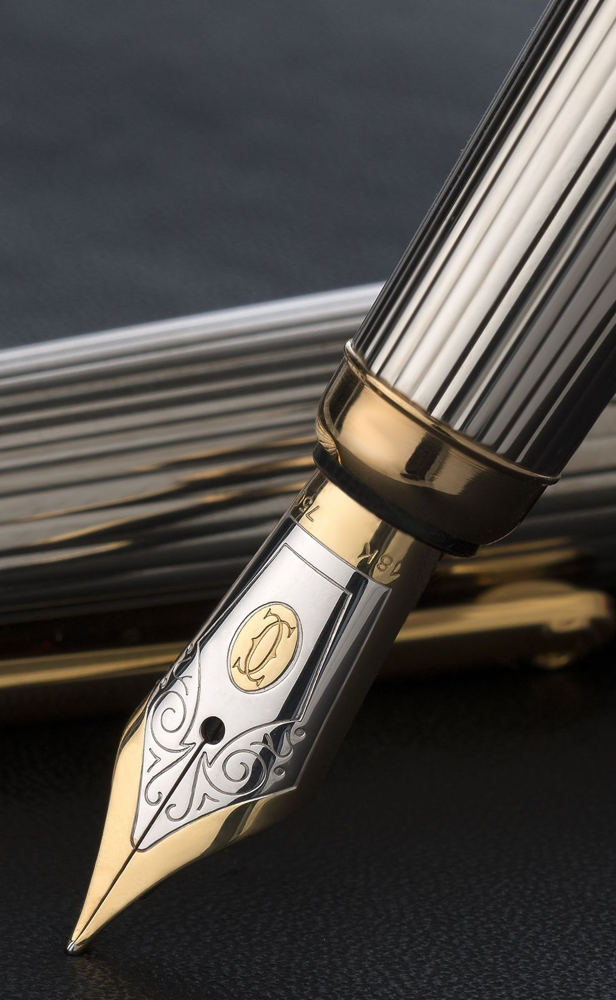
| Bộ phận | Tên tiếng Anh | Vai trò |
|---|---|---|
| Ngòi | Nib | Đưa mực xuống giấy; quyết định độ to nhỏ và cảm giác của nét. |
| Rãnh dẫn mực | Feed | Dẫn mực từ ống chứa xuống ngòi, đồng thời cho không khí đi ngược lên để cân bằng áp suất. |
| Cổ bút | Section / Grip | Chỗ cầm bút, giữ ngòi và rãnh dẫn mực. |
| Ống chứa mực | Reservoir | Ống mực, bộ bơm hoặc chính thân bút. |
| Cơ chế bơm | Filling system | Cách đưa mực vào bút (xem mục 05). |
| Thân bút | Barrel | Bảo vệ ống mực, quyết định trọng lượng và độ cân bằng. |
| Nắp bút | Cap | Bịt kín ngòi để mực không khô; nắp trong (inner cap) giúp giữ ẩm. |
| Kẹp | Clip | Giữ bút trong túi áo, thường mang dấu hiệu thương hiệu. |
Bút máy hoạt động thế nào?
Mực đi theo các rãnh nhỏ nhờ lực mao dẫn, giống nước thấm lên khăn giấy. Mỗi giọt mực đi xuống, một bọt khí nhỏ đi ngược lên ống chứa. Rãnh dẫn mực của Waterman năm 1884 chính là lời giải cho bài toán cân bằng mực và khí này, giúp bút hết cảnh nhỏ giọt hay nghẹt mực.
Thế giới ngòi bút
Ngòi là trái tim của cây bút máy. Chất liệu, cỡ và kiểu mài của ngòi quyết định nét chữ bạn để lại trên trang giấy.
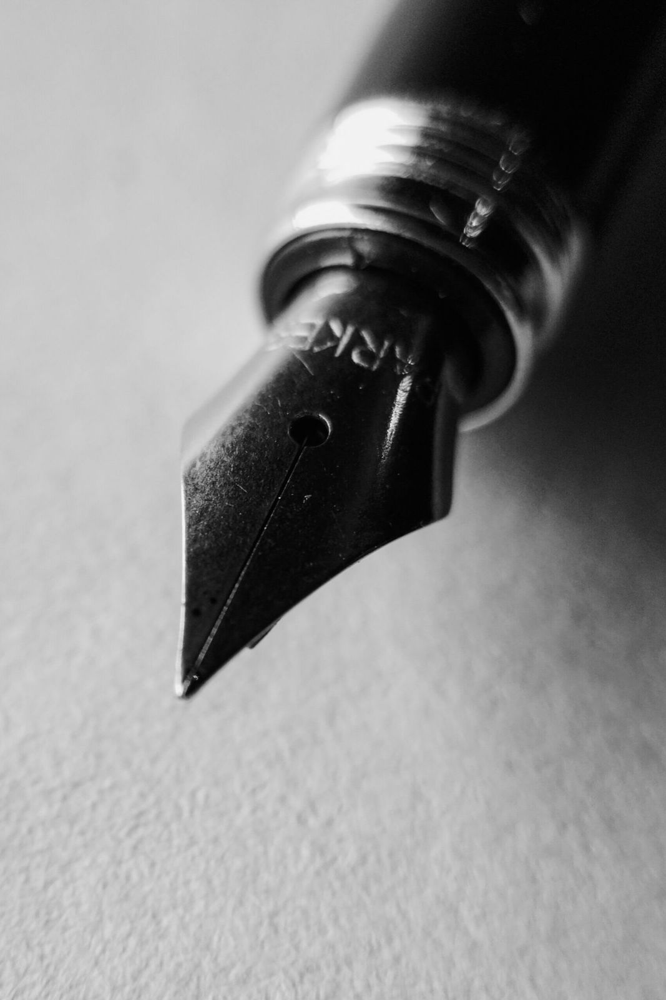
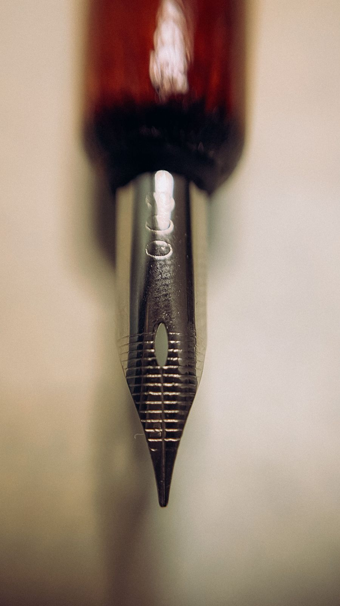
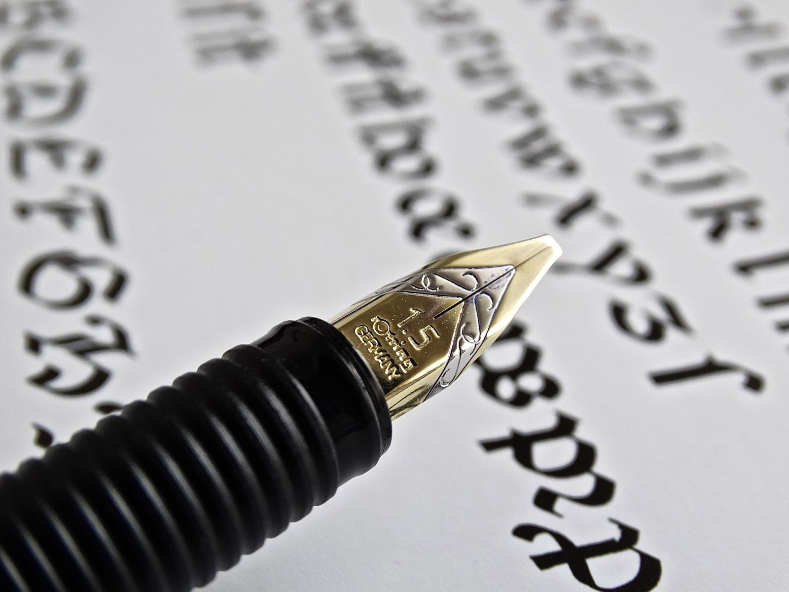
Chất liệu ngòi
- Thép không gỉ: bền, cứng, giá dễ chịu; lựa chọn tốt cho người mới.
- Vàng 14K, 18K, 21K: mềm và đàn hồi hơn, chống ăn mòn tốt; khắc ký hiệu tuổi vàng như "14K 585" hoặc "18K 750".
- Mạ vàng: ngòi thép phủ một lớp vàng mỏng, chủ yếu để đẹp, không đổi cảm giác viết.
- Đầu ngòi (tipping): viên kim loại siêu cứng hàn ở mũi ngòi, quen gọi là "iridium", ngày nay thường là hợp kim osmium hoặc ruthenium. Độ mịn khi viết phụ thuộc vào đầu ngòi được mài và chỉnh tốt, không chỉ vào thân ngòi là vàng hay thép.
Cỡ ngòi phổ biến
| Ký hiệu | Tên | Nét (tham khảo) | Phù hợp |
|---|---|---|---|
| EF | Extra Fine | rất mảnh | chữ nhỏ, chữ Hán, giấy mỏng |
| F | Fine | khoảng 0,35 đến 0,6 mm | viết hằng ngày, ghi chép |
| M | Medium | khoảng 0,65 đến 0,8 mm | người mới, đa dụng |
| B | Broad | khoảng 0,8 đến 1 mm | chữ to, ký tên |
| BB | Double Broad | khoảng 1 mm trở lên | ký tên, ngắm mực |
Ngòi Nhật thường nét mảnh hơn ngòi phương Tây cùng ký hiệu: cỡ M Nhật gần bằng F của châu Âu. Mỗi hãng một khác, nên thử trước khi chọn.
Kiểu ngòi đặc biệt
- Stub, Italic: đầu dẹt, tạo nét ngang mảnh, nét dọc đậm; hợp viết calligraphy và chữ Việt có dấu.
- Oblique (OM, OB): mài xiên cho người cầm bút xoay.
- Flex, soft: ngòi đàn hồi, nét to ra khi ấn; phong cách các ngòi Waterman đầu thế kỷ XX.
- Ngòi cong (fude): ngòi gập cong kiểu Nhật, nét thay đổi theo góc cầm, gần với bút lông.
- Ngòi chuyên dụng cho thư pháp: bản rộng 1,1 mm, 1,5 mm và lớn hơn.
Hệ thống bơm mực
Mực vào bút bằng cách nào? Từ ống nhỏ giọt thời sơ khai đến piston, cần gạt hay ống mực thay nhanh, mỗi cơ chế là một lời giải kỹ thuật riêng và một phần lịch sử của các hãng bút.
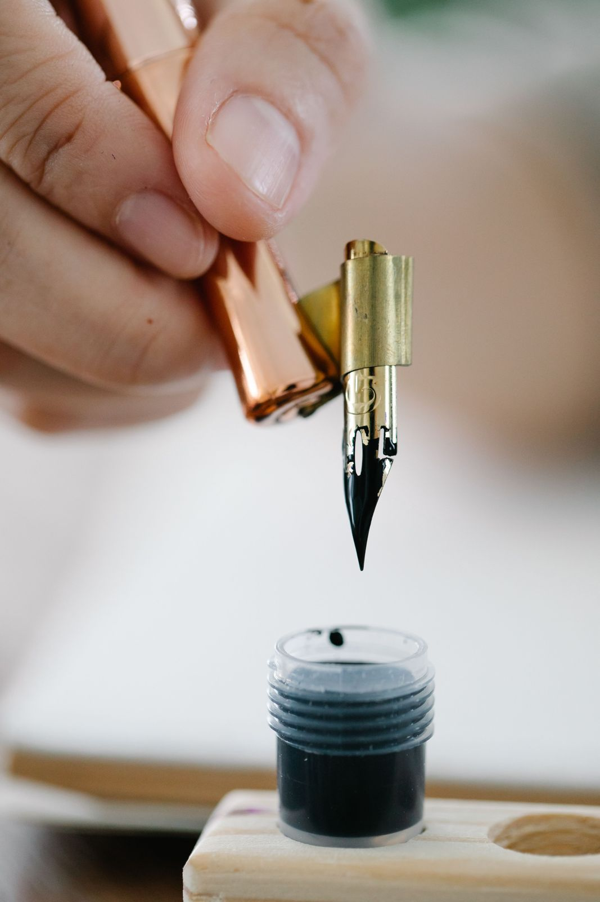
| Cơ chế | Cách hoạt động | Ưu điểm | Lưu ý | Thời kỳ / ví dụ |
|---|---|---|---|---|
| Ống mực (cartridge) | Ống nhựa đầy mực cắm vào cổ bút | Tiện, sạch, dễ mang theo | Ít mực, rác nhựa, màu hạn chế | Phổ biến nhất từ sau 1960 |
| Bộ bơm (converter) | Ống piston nhỏ thay chỗ ống mực, hút mực từ lọ | Dùng được mực lọ cho bút dùng ống | Dung tích nhỏ | Đi kèm đa số bút hiện nay |
| Piston | Vặn núm cuối thân, piston hút mực vào cả thân bút | Chứa nhiều mực | Phải hút từ lọ | Pelikan 1929, Montblanc 149 |
| Ống nhỏ giọt (eyedropper) | Bơm thẳng mực vào thân bút bằng ống nhỏ giọt | Dung tích rất lớn, đơn giản | Dễ "ợ" mực khi gần hết hoặc khi nhiệt độ thay đổi | Kiểu bút đầu tiên, vẫn được dùng |
| Cần gạt (lever filler) | Kéo cần gạt ép túi cao su, thả ra để hút mực | Bơm nhanh, bền | Túi cao su lão hóa, cần thay | Sheaffer 1912, phổ biến nhất thời vintage |
| Nút bấm (button filler) | Bấm nút ở đuôi thân để ép túi mực | Thân bút gọn, liền mạch | Túi cao su cần thay | Parker Duofold |
| Hút chân không (vacuum) | Đẩy cần hoặc nút để tạo chân không hút mực | Dung tích lớn | Gioăng cần bảo dưỡng | Parker Vacumatic, Pilot Custom 823 |
| Snorkel | Ống hút nhỏ thò ra, ngòi không cần nhúng mực | Không dính mực vào ngòi | Cơ chế phức tạp | Sheaffer thập niên 1950 |
Gợi ý cho người mới: bút ống mực kèm converter là lựa chọn linh hoạt nhất. Khi đã quen mực lọ, hãy thử bút piston để có nhiều mực hơn.
Mực
Mực bút máy là mực gốc nước, loãng và được pha riêng để chảy qua những rãnh rất nhỏ. Hàng trăm màu, hiệu ứng ánh kim, lấp lánh, đổi sắc: chọn mực cũng là một niềm vui.
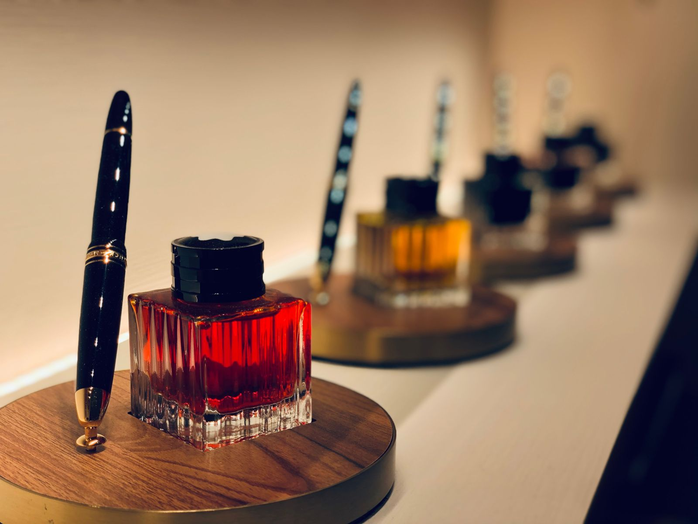
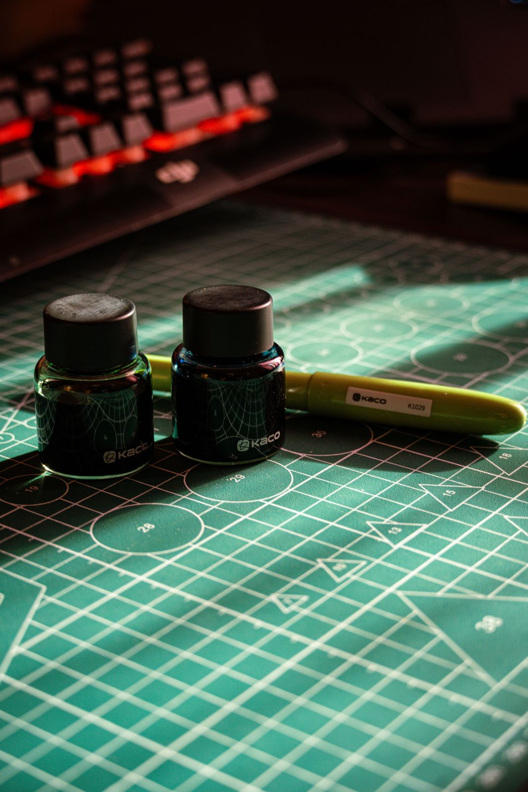
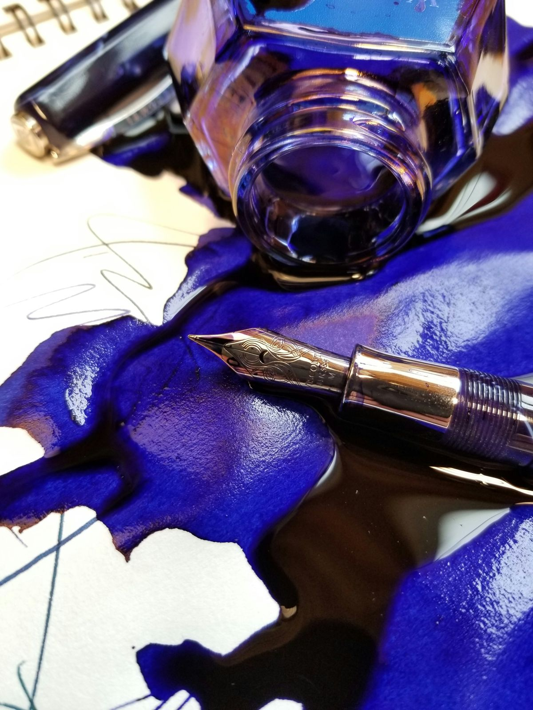
| Loại mực | Thành phần | Ưu điểm | Lưu ý |
|---|---|---|---|
| Gốc thuốc nhuộm (dye-based) | Thuốc nhuộm tan hoàn toàn trong nước | Nhiều màu nhất, dễ rửa, an toàn cho bút | Kém chịu nước, dễ phai dưới nắng |
| Gốc bột màu (pigment) | Hạt màu siêu mịn lơ lửng trong nước | Chống nước, bền màu, hợp lưu trữ giấy tờ | Dễ nghẹt nếu để khô; rửa bút thường xuyên |
| Mực sắt (iron gall) | Sắt sunfat phản ứng với axit tannic từ mụn sồi | Đậm dần sau khi viết, rất bền với thời gian | Có tính axit; chỉ dùng cho bút viết thường xuyên |
| Mực nhũ (shimmer) | Mực nhuộm có thêm hạt nhũ kim loại | Lấp lánh trên giấy tốt | Hợp ngòi to; lắc đều, rửa bút kỹ |
| Ánh kim (sheen), đổi sắc (shading) | Mực đậm đặc thuốc nhuộm | Ánh đỏ, ánh xanh ở mép nét; nét đậm nhạt | Khô chậm hơn |
Điều nên biết
- Mực sắt có lịch sử hàng thế kỷ: nhiều bản thảo của Leonardo da Vinci được viết bằng loại mực này.
- Không dùng mực tàu, mực thư pháp hay mực bút chấm cho bút máy: chất keo (như gôm arabic) sẽ làm nghẹt rãnh dẫn mực.
- Khi đổi loại mực, rửa bút bằng nước sạch trước để tránh mực kết tủa.
- Thử mực trên giấy tốt để thấy rõ ánh kim và đổi sắc.
Tại Vietnam Pen Show, khách tham quan có thể tự pha màu mực ở góc Pha mực và cá nhân hóa, hoặc tham gia các workshop pha mực của thương hiệu đồng hành (Sailor đã tổ chức Ink Blending năm 2025).
Giấy và vật liệu viết
Cùng một cây bút, cùng một lọ mực, nhưng trên mỗi loại giấy nét chữ lại khác. Giấy tốt giữ nét sắc, không lem, không thấm sang mặt sau và làm hiện rõ màu mực.
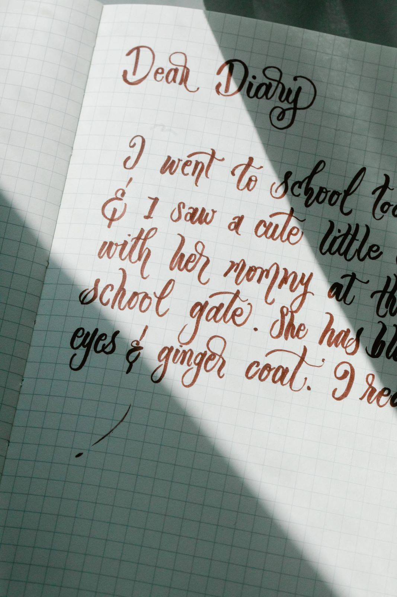
Những lỗi thường gặp trên giấy kém
- Nhòe sợi (feathering): mực loang theo sớ giấy, nét bị tưa.
- Thấm mặt sau (bleed-through): mực xuyên sang trang sau.
- Hằn bóng (ghosting): nhìn thấy chữ từ mặt sau dù mực không thấm qua.
Chọn giấy cho bút máy
- Độ dày (định lượng, gsm) không phải tất cả: lớp phủ bề mặt (sizing) mới quyết định giấy có "ăn" mực hay không. Có giấy mỏng 52 gsm vẫn viết bút máy rất đẹp, có giấy 100 gsm vẫn nhòe.
- Người mới có thể bắt đầu với giấy từ 80 gsm có bề mặt láng.
- Giấy láng giúp hiện ánh kim (sheen) và đổi sắc (shading) rõ hơn; giấy xốp hút mực nhanh, khô nhanh nhưng nét to ra.
- Các kiểu dòng kẻ: kẻ ngang, ô vuông, chấm (dot grid), trơn; vở ô ly là đặc trưng của lớp học Việt Nam.
Vật liệu viết truyền thống của người Việt
- Giấy dó: làm từ vỏ cây dó, gắn với các làng nghề như Yên Thái (Hà Nội), Đống Cao (Bắc Ninh); dùng cho thư pháp, tranh Đông Hồ.
- Bút lông và mực tàu: công cụ của chữ Hán Nôm trước khi bút máy đến.
Vật liệu và chế tác
Thân bút có thể là cao su lưu hóa, celluloid, nhựa acrylic, kim loại hay gỗ, rồi được phủ sơn mài, khắc, vẽ tay. Mỗi chất liệu kể một câu chuyện về thời đại và tay nghề người thợ.
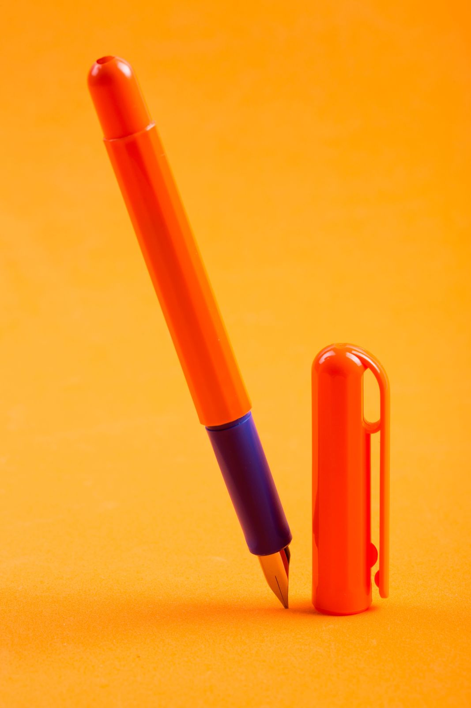
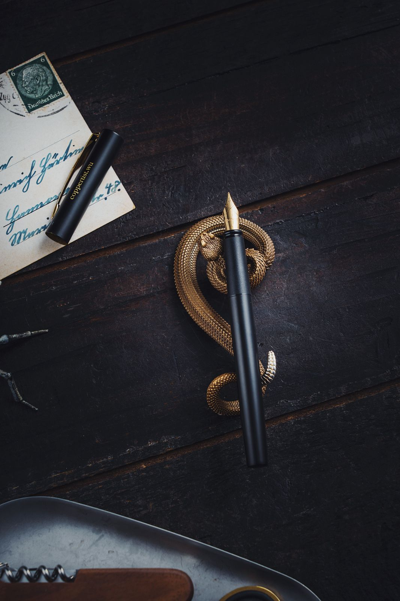
| Chất liệu | Đặc điểm | Thời kỳ / ví dụ |
|---|---|---|
| Ebonite (cao su lưu hóa) | Cao su trộn lưu huỳnh, ấm tay, dễ tiện, có thể phai màu theo thời gian | Vật liệu chính đầu thế kỷ XX; nay dùng cho bút thủ công |
| Celluloid | Nhựa sớm, vân xà cừ, vân đá sống động; hơi hút ẩm tay | Thời hoàng kim 1920 đến 1950; Visconti, Omas |
| Nhựa acrylic, resin | Đúc hoặc tiện, màu phong phú, bền, giá hợp lý | Phổ biến nhất hiện nay |
| Nhựa trong suốt (demonstrator) | Thấy được cơ chế và màu mực bên trong | Bút piston, eyedropper hiện đại |
| Kim loại | Đồng thau, nhôm, thép, bạc, titan: nặng, chắc, có thể khắc | Bút ký, bút công sở |
| Gỗ và vật liệu tự nhiên | Vân gỗ độc bản, cần dầu dưỡng | Bút thủ công |
Kỹ thuật trang trí
- Urushi (sơn mài Nhật): nhựa cây sơn quét nhiều lớp trong nhiều tháng, bền và chống ẩm.
- Maki-e: rắc bột vàng, bạc lên lớp sơn ướt để tạo hình. Namiki (Pilot) đưa maki-e lên bút máy từ năm 1925, cùng nghệ nhân Matsuda Gonroku. Các kiểu chính: hira maki-e (phẳng), taka maki-e (nổi), raden (khảm xà cừ).
- Guilloché và khắc: hoa văn khắc máy hoặc tay trên kim loại quý.
- Vẽ tay, khắc tên, cá nhân hóa: như nón lá và bút vẽ tay xuất hiện tại Vietnam Pen Show 2025.
Sơn mài Việt Nam có cùng gốc nhựa cây sơn với urushi Nhật Bản, một sợi dây nối giữa hai nền thủ công.
Sử dụng và chăm sóc
Một cây bút máy được chăm sóc đúng cách có thể theo bạn cả đời, thậm chí truyền lại cho thế hệ sau. Bí quyết chủ yếu là nước sạch và thói quen đậy nắp.
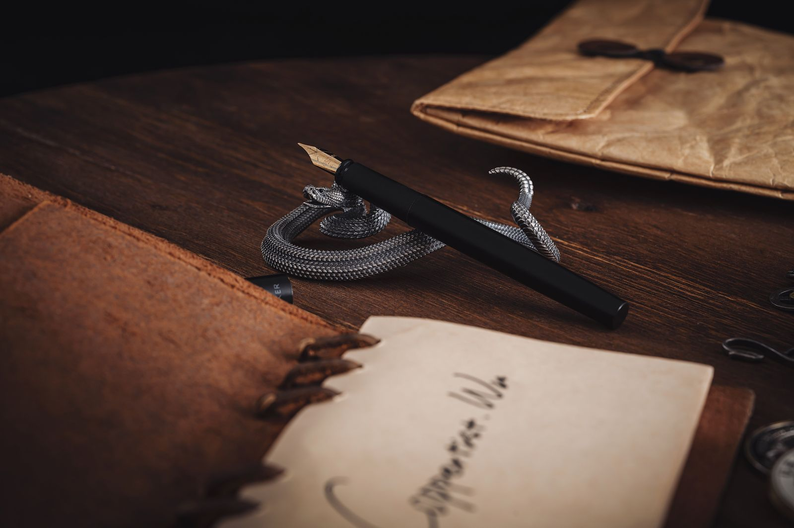
Cách viết đúng
- Cầm nhẹ, không ấn mạnh: mực tự chảy.
- Mặt ngòi hướng lên, hai nửa ngòi chạm giấy đều.
- Không cho người khác mượn viết lâu: ngòi dần "quen" góc cầm của chủ.
Chăm sóc hằng ngày
- Đậy nắp ngay khi ngừng viết để mực không khô ở ngòi.
- Để bút nằm ngang hoặc ngòi hướng lên.
- Bút không dùng trong vài tuần: rửa sạch và để khô trước khi cất.
- Tránh để bút dưới nắng, trong xe ô tô nóng hay mang lên máy bay khi đầy mực (áp suất thay đổi dễ làm rỉ mực).
Rửa bút (khoảng mỗi 4 đến 6 tuần, hoặc mỗi lần đổi mực)
- Tháo ống mực hoặc bơm hết mực ra.
- Bơm nước sạch, ấm vừa phải (không dùng nước nóng), xả nhiều lần đến khi nước trong.
- Mực khó rửa: dùng dung dịch rửa bút chuyên dụng hoặc nước pha vài giọt nước rửa chén loãng, rồi tráng lại bằng nước sạch.
- Lau khô bằng khăn mềm, để ngòi hướng xuống trên khăn giấy cho nước rút hết.
Không nên
- Không dùng cồn, axeton hay hóa chất mạnh: làm hỏng nhựa và celluloid.
- Không ngâm bút kim loại, bút sơn mài trong nước quá lâu.
- Không tự uốn, mài ngòi nếu chưa có kinh nghiệm: hãy mang đến Pen Clinic.
Sửa chữa và phục chế
Bút máy được làm để sửa được. Một cây bút cũ của ông bà, sau khi thay túi mực và chỉnh ngòi, có thể viết lại như xưa. Đó là tinh thần của Pen Clinic tại mỗi mùa Pen Show.
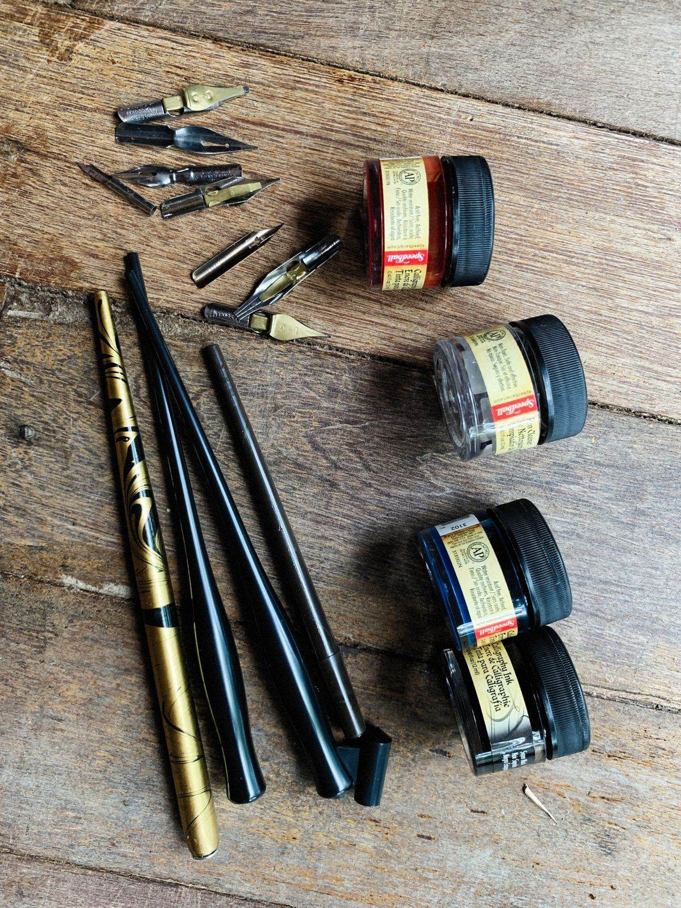
| Triệu chứng | Nguyên nhân thường gặp | Cách xử lý |
|---|---|---|
| Không ra mực, khó bắt đầu nét | Mực khô ở ngòi; rãnh dẫn mực nghẹt | Rửa bút; chạm ngòi vào giấy ẩm hoặc nước |
| Mực ra không đều, đứt nét | Khe ngòi quá hẹp; mực khô | Rửa bút; nhờ thợ chỉnh khe ngòi |
| Bút rỉ, "ợ" mực | Ống mực gần hết; nhiệt độ thay đổi; nứt cổ bút | Bơm đầy mực; kiểm tra gioăng, ren |
| Ngòi xước, vướng giấy | Hai nửa đầu ngòi lệch nhau | Chỉnh ngòi (nib tuning), mài nhẹ đầu ngòi |
| Bút cổ không hút mực | Túi cao su đã mục, gioăng piston khô | Thay túi mực, thay gioăng, bôi mỡ silicon |
| Ngòi cong, gãy | Rơi bút, cắm nắp sai | Nắn lại hoặc thay ngòi |
Phục chế bút cổ
Thường gồm: tháo rời và làm sạch, thay túi cao su (với bút cần gạt, nút bấm), đánh bóng thân, phục hồi chữ khắc, chỉnh và mài ngòi. Nguyên tắc của người phục chế là giữ tối đa bộ phận gốc và chỉ thay khi cần.
Khi nào tự làm, khi nào nhờ thợ?
- Tự làm được: rửa bút, thay ống mực, lau ngòi.
- Nên nhờ thợ: chỉnh và mài ngòi, thay túi mực, sửa piston, đánh bóng celluloid và sơn mài, bút có giá trị sưu tầm.
Tại Vietnam Pen Show, góc Pen Clinic là nơi người thợ chỉnh ngòi, sửa và bảo dưỡng bút trực tiếp cho khách.
Nguồn tham khảo
- Fountain pen chronology, fountainpen.it
- Goethe-Institut: The fountain pen
- Báo Pháp Luật: Văn phòng phẩm Hồng Hà 60 năm
- SGGP: Viết tay
- Cult Pens: Fountain pen filling systems
- Appelboom: Nib information
- Wikipedia: Fountain pen ink
- FP Revolution: History of maki-e in fountain pens
Ảnh minh họa từ Pexels và Unsplash, dùng theo giấy phép của từng nền tảng.